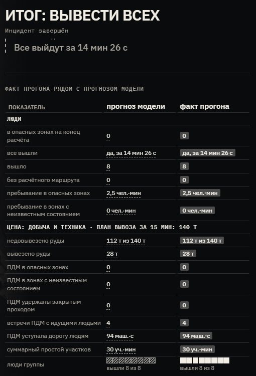
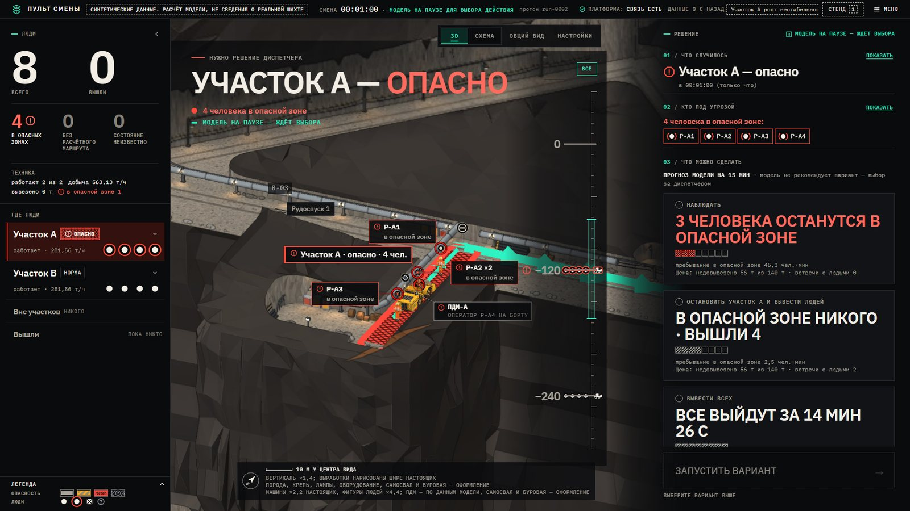
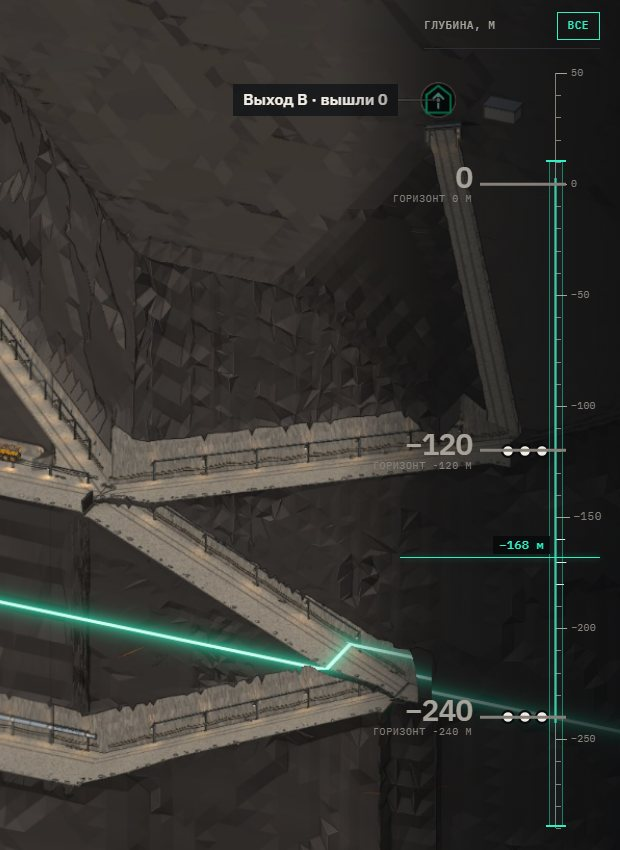
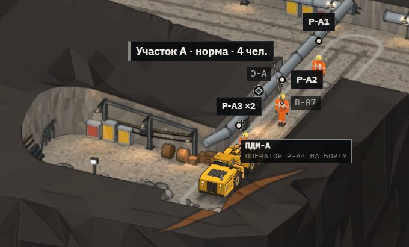
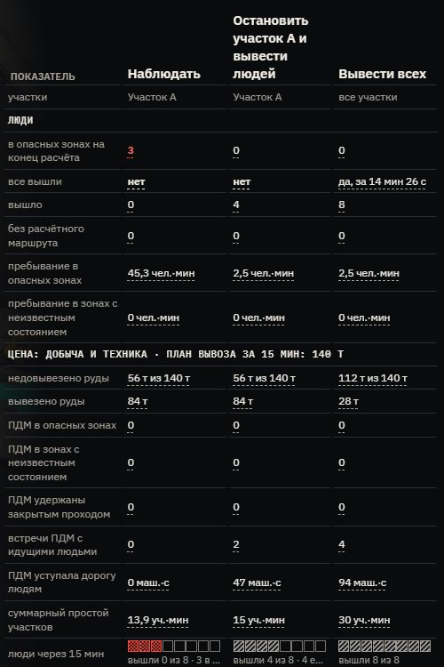

Конкурс «Цифровой рудник на OpenEgiz» · 2026
Кого выводить — и чего это стоит
Цифровой двойник смены подземного рудника для горного диспетчера: три варианта действий, прогноз на 15 минут, люди и добыча — рядом.
→ пробел или колесо — вниз, горизонт за горизонтом
Живой three.js: тот же env.glb, что в пульте диспетчера. Условный рудник: горизонты 0 / −120 / −240 м, вертикаль ×1,35.
01 · Проблема
Под землёй нет GPS. Есть минуты.
4–5мин
на индивидуальное оповещение каждого, кто под землёй: так требуют Правила РК № 352, п. 54
Обзора нет, выходов мало, путь отрезается за минуты. Положение человека — это выработка и отметка, и только если их даёт система позиционирования рудника.
-
24.08.2018
Тишинский рудник · Казцинк
Выработка обрушилась, машинист ПДМ остался под завалом вместе с машиной. В спасательных работах — 40 человек и 5 машин.
informburo.kz, 26.08.2018 · newtimes.kz, 06.09.2018
-
05.01.2020
Риддер-Сокольный · Казцинк · 16-й горизонт
Рабочий участок перекрыт массивом, бурильщик отрезан. Весь подземный персонал выведен на поверхность по аварийному порядку.
inbusiness.kz, 06.01.2020
-
17.02.2025
Жомарт · Казахмыс · 640 м
Семеро погибших. Сначала сообщали об обрушении; предварительная причина по данным комиссии — воспламенение метана, не обрушение.
bes.media · kt.kz
Источники, даты и пометки достоверности: team/research/kz-open-sources.md (разделы 3a, 4)
02 · Решение диспетчера
Участок А — опасно
- 4 человека в опасной зоне · горизонт −120 м
- Модель на паузе — ждёт выбора
- 1Наблюдать
- 2Остановить участок А и вывести людей
- 3Вывести всех
Модель не рекомендует вариант — она показывает последствия каждого. Выбор за диспетчером.
Сценарий «Рост нестабильности»: синтетический датчик смещения на участке А, решение на 60-й модельной секунде. Мятный пунктир — расчётный маршрут к выходу А.
03 · Роль диспетчера
Двойник не оповещает. Он сокращает самый трудный шаг.
- 1
Двойник
кто в опасной зоне, без расчётного маршрута, в неизвестном состоянии
- 2
Диспетчер
сравнивает три варианта: людей, время выхода, тонны, встречи с ПДМ — и выбирает
- 3
Адресный список
кого выводить, каким маршрутом, к какому выходу
- 4
Оповещение рудника
светильники и пейджеры, излучающий кабель, громкая связь, рация
будущая интеграция — в прототипе нет
- 5
Контроль выхода
кто вышел, кто идёт, кто без маршрута, о ком данных нет
Горный диспетчер — дежурное лицо смены: при аварии он вводит в действие план ликвидации аварий — оповещение, вызов горноспасателей, команда на вывод. Самый трудный шаг между тревогой и оповещением — понять, кого и куда выводить и чего это стоит.
Правила РК № 352: п. 3–4 (ПЛА), п. 54 (оповещение 4–5 мин). Жомарт: позиционирование и аварийное оповещение по 58 км излучающего кабеля (bizmedia.kz, 18.09.2026). team/research/kz-open-sources.md
04 · Двойник на OpenEgiz
Шахта живёт в двойниках Eclipse Ditto
team/sim · Python
Симулятор
12 выработок, 2 горизонта, 2 выхода, 2 участка, 2 датчика, 8 человек, 2 ПДМ. Шаг — 1 модельная секунда
OpenEgiz · Eclipse Ditto
38 двойников
шахта, смена, горизонты, выработки, участки, выходы, датчики, работники, ПДМ, варианты; 33 — в одном согласованном снимке смены
team/ui · без сборки
Пульт диспетчера
3D-разрез и схема; читает только снимок смены через ограниченный прокси
Команда обратно: live-сообщение Ditto → MQTT → симулятор. HTTP 202 — ещё не исполнение: подтверждение приходит в состоянии смены.
Прогноз считает копия состояния симулятора
Интерфейс ничего не досчитывает и не подставляет чисел.
Параметры с источниками
parameter_registry в атрибутах шахты, calibrated=false; team/research/parameters.md.
Неизвестное — неизвестно
Потерянный датчик хранит последнее «опасно»; данные стареют на экране, а не исчезают.
team/CONTRACT.md, раздел 9: manifest — 38 объектов, scene — 33. Публикация — цель 1 раз в секунду, 10 модельных секунд за цикл.
05 · Польза и цена
Один снимок — три будущих
Вывод участка А сокращает пребывание людей в опасной зоне почти в 18 раз при той же потере добычи, что и наблюдение. Полный вывод даёт тот же эффект на А, но останавливает B: 112 т вместо 56.
Сценарий «Нестабильность», окно 900 с после решения, модель 0.2, топология t2. Модель не ранжирует варианты; убыток в деньгах не оценивается. team/research/comparison.md
06 · Что если
4 сценария × 3 действия
Условия меняются на стенде без изменения кода: пресет, затем выбор варианта; отмена — снять условие или начать новый прогон.
Закрытый выход честно остаётся закрытым: локальный приказ не создаёт отсутствующий маршрут, четверо ждут без пути, и это видно на экране.
вышел под землёй без расчётного маршрута
12 автономных исполнений, окно 900 с. Воспроизведение: python -m team.sim.comparison --check team/research/comparison.json
07 · Проверка
Прогноз = факт
Сквозной прогон на платформе, 16 октября 2026: «Вывести всех» в сценарии «Нестабильность».
- вышли
- 8из 8
- время выхода всех
- 866с
- в опасной зоне
- 152чел·с
- недовывезено
- 112т
- встречи ПДМ с людьми
- 4
- совпало с прогнозом
- 12из 12 сочетаний
Все восемь метрик цены совпали с прогнозом. Прогноз и факт считает один код: это проверка согласованности двойника, не физическая валидация. Калибровка — на учебных тревогах пилота.

SUBMISSION.md, «What works and what does not»; team/research/comparison.md (12 из 12)
08 · Визуализация
Своя шахта, не шаблон
- Собрана скриптом Blender из той же топологии t2, что и симулятор: 12 выработок, горизонты 0 / −120 / −240 м
- Свет запечён в текстуры; одна ортографическая камера — только сдвиг и масштаб
- Арт включается, только если подпись топологии совпала с живыми двойниками
- Вертикаль ×1,35; ширина выработок и фигуры — условные, и это подписано на экране
Камера только что спустилась с горизонта −120 на −240: участок B, его ПДМ и смена. Это живой рендер, не видео.
09 · Пульт диспетчера
Глубина читается с одного взгляда


- мятный — маршруты и выходы
- красный — только опасность
- штриховка «?» — неизвестно, никогда не похоже на норму
- перечёркнутый квадрат — нет расчётного маршрута
10 · Техника
Цена решения — в тоннах
- 14т
- ковш Sandvik LH514 — паспорт производителя
- 179с
- цикл ПДМ: погрузка, рейс, разгрузка, возврат
- 140т
- план вывоза за окно 15 мин: 5 ковшей × 14 т × 2 ПДМ
- 4
- встречи ПДМ с идущими людьми при выводе всех: машина уступает дорогу, 94 маш·с


Скорости, времена операций, интервал до человека и положение кармана — допущения TBD-source: team/research/equipment.md. Номинал 14 × 3600 / 179 = 281,6 т/ч на участок.
11 · Неудобные вопросы
Честные ответы
- Зачем, если есть позиционирование и диспетчерская?
- Данные есть, сравнения нет: ни одна система не отвечает, что будет, если остановить участок А, а не выводить всех, — с прогнозом и ценой. Подтверждено только на синтетике.
- Модель ошибётся?
- Она синтетическая и не откалибрована. Поэтому не рекомендует вариант, а неизвестное показывает неизвестным. Механизм «прогноз против факта» уже есть.
- Под землёй нет GPS?
- Точность равна точности системы рудника: излучающий кабель или RFID — выработка и участок, UWB — точнее. Пропал сигнал — «состояние неизвестно». В прототипе позиции идеальные.
- Откуда карта выработок?
- Из маркшейдерской модели (Micromine, Surpac, Deswik, Datamine) как граф узлов, выработок и выходов. Импорта нет — топология задана в коде.
- Кто отвечает за решение?
- Диспетчер. Система вспомогательная и ничем не управляет: устаревшие данные показывает устаревшими, при потере связи замирает, без 3D остаётся схема.
- Чем вы лучше команды, которая сделает за месяц?
- Технологически ничем уникальным. Отличие — один вопрос диспетчера, проверяемый прогноз, цена рядом с пользой, привязка к Правилам РК.
12 · Ограничения и путь к внедрению
Чего нет — и как дойти до пилота
Ограничения сегодня
- Нет физического прогноза обрушений; индекс нестабильности — не вероятность аварии
- Параметры из литературы и допущений, calibrated=false
- 8 человек и 2 ПДМ: масштаб в сотни людей не проверен
- Позиции идеальные: нет теста с «грязными» данными позиционирования
- Нет пропускной способности путей, очередей, уклона, подъёмников
Пилот на руднике
- Импорт графа выработок из маркшейдерской модели — первая разработка
- Позиционирование рудника вместо идеальных позиций, «неизвестно» при потере
- Учебные тревоги: прогноз против факта, калибровка скоростей и времён
- Адресный список → штатное оповещение рудника; согласование с промбезопасностью
Что измерить на пилоте
время от тревоги до решения · чел·с в опасной зоне · лишние потери добычи · оповещение не дольше 4–5 мин (п. 54)
SUBMISSION.md, «Роль диспетчера, ограничения и путь к внедрению» и «Limitations»
13 · Команда и запуск
Team 040
[Имя Фамилия]
@github-handle · роль
[Имя Фамилия]
@github-handle · роль
[Имя Фамилия]
@github-handle · роль
Запуск на стенде
$ make up # пульт диспетчера http://127.0.0.1:8088/ # Стенд → «Рост нестабильности» → на 60-й модельной секунде выбрать вариант $ python3 -m team.sim.comparison --check team/research/comparison.json
Презентация: team/presentation/index.html · PDF: presentation.pdf · замысел, проверки и ограничения: SUBMISSION.md
Платформа OpenEgiz v1.0.4 · синтетические данные, условный рудник · дно презентации: горизонт −240 м